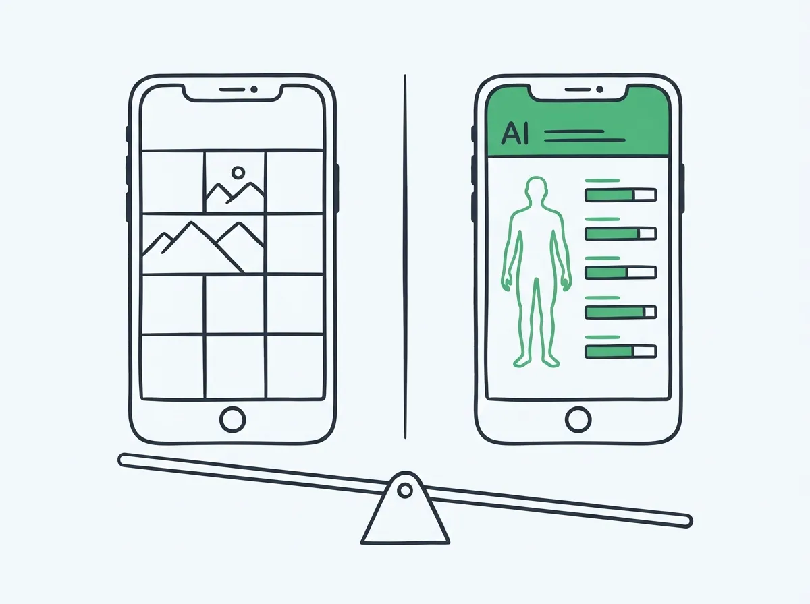

trackBod Review 2026: Is It Worth It? (Honest Comparison with GainFrame)
trackBod and GainFrame both promise AI body composition from progress photos. One gets you started fast. The other goes considerably deeper. Here's what actually differs.

trackBod vs GainFrame: Which App Should You Use?
Short answer: trackBod is a solid entry-level option for tracking body composition with progress photos. It gives you AI body fat estimates, weight logging, and basic progress tracking in a clean, simple interface. GainFrame covers all of that and adds 12 individual muscle group scores, FFMI, lean mass, Future Physique AI projection, and Hevy workout integration — with significantly more depth for lifters who want to understand what is changing and where.
This isn't a case where one app is objectively better. It depends on what you're trying to get out of body composition tracking:
- trackBod is for people who want a clean, simple tracker — snap a photo, see estimated body fat, log weight, done.
- GainFrame is for lifters who want to go deeper — muscle group-level analysis, body composition metrics used by actual coaches (FFMI, lean mass index), and comparison tools that show exactly what changed between two photos.
Both apps are legitimate. Let's break down what each one actually does.
What Is trackBod?
trackBod is an iOS app focused on body composition tracking through progress photos and weight logging. Its core pitch is simple: take a photo, get an AI body fat estimate, track the trend over time. It's designed to be low-friction and accessible — a body composition tracker that doesn't require a scale, calipers, or clinic visit.
What does trackBod do?
Progress Photo Capture
Take or import photos with guided posing, view a timeline of your check-ins, and compare photos over time.
AI Body Fat Estimate
Each photo generates an estimated body fat percentage using AI. Trend over time to see your direction of travel.
Weight Logging
Log scale weight alongside photos. View body fat and weight on the same chart to see trends together.
Timeline View
Browse your check-in history in a visual grid. See how your physique has changed over weeks and months.
What trackBod does NOT do
trackBod is intentionally focused. These are genuine gaps for lifters who want more:
- No individual muscle group scoring — you get a single body fat estimate, not a breakdown by chest / shoulders / arms / etc.
- No FFMI or lean mass calculation — body fat % is the only composition metric
- No workout integration — no Hevy, no Apple Health workout data attached to photos
- No Future Physique projection — no AI-generated visual of where you're heading
- No side-by-side deep comparison with metric deltas between two specific check-ins
For someone who primarily wants a body fat trend line, that's fine. For a serious lifter trying to understand which muscle groups are lagging or whether their recomp is actually working, those gaps matter.
What Is GainFrame? AI Body Composition Built for Lifters
GainFrame is an iOS app built by a solo developer (Michael Rode — that's me, 20 years lifting) specifically for serious gym-goers who want the kind of body composition data that was previously only accessible via DEXA scan or working with a sports dietitian. The core differentiator: AI analysis that goes to the muscle-group level, not just a single body fat number.

A single GainFrame check-in: physique score, body fat %, FFMI, and 12 individual muscle group ratings — all from one photo.
What does GainFrame do?
| Feature | What it does |
|---|---|
| AI Deep Dive | Each check-in generates a physique score (1–100), body fat %, BMI, FFMI, lean mass, and 12 individual muscle group scores (Needs Work → Developing → Strong) |
| AI Deep Dive Compare | Select any two check-ins for a side-by-side breakdown: body fat delta, weight delta, FFMI shift, and per-muscle-group comparison |
| Future Physique | AI-generates a projected image of your physique at 3, 6, or 12 months out, with predicted stats at each milestone |
| Smart Import | Batch-import hundreds of camera roll photos; AI classifies each by pose (Front, Back, Side, Flexed) automatically |
| Hevy integration | Workout volume from Hevy auto-attaches to that day's check-in — you can see your training load next to your physique on any given day |
| Apple Health sync | Weight, height, DOB sync via HealthKit so you don't re-enter data |
| Privacy tools | Built-in face blur, background removal, transformation collages for before/after sharing |
| Swipe comparison | Side-by-side or swipe-slider between any two photos with auto body alignment — no tripod needed to get consistent comparisons |

GainFrame's Deep Dive Compare: pick any two check-ins and see exactly what changed — body fat, FFMI, and each muscle group side by side.
trackBod vs GainFrame: Feature Comparison
| Feature | trackBod | GainFrame |
|---|---|---|
| AI body fat estimation from photos | Yes | Yes (Gemini-powered) |
| Overall physique score | No | Yes (1–100) |
| 12 individual muscle group scores | No | Yes (per photo) |
| FFMI calculation | No | Yes (in every Deep Dive) |
| Lean mass tracking | No | Yes |
| Weight logging | Yes | Yes (via Apple Health) |
| Progress photo timeline | Yes | Yes |
| Before/after comparison | Basic | Deep Dive Compare with metric deltas |
| Future Physique AI projection | No | Yes (3/6/12 month) |
| Batch import with auto pose classification | No | Yes (AI sorts by Front/Back/Side/Flexed) |
| Workout app integration | No | Hevy (volume auto-attaches to photos) |
| Apple Health sync | Limited | Full (weight, height, workouts) |
| Face blur for sharing | No | Yes (built-in) |
| Background removal for sharing | No | Yes (built-in) |
| Platform | iOS | iOS only |
| Best for | Simple body fat trend tracking | Lifters wanting gym-grade body composition depth |
The Accuracy Question: How Reliable Are AI Body Fat Estimates?
Both apps use AI inference from photos to estimate body fat. Neither claims DEXA-level precision, and both shouldn't. Here's the honest framing:
What photo-based AI body fat estimates are actually good for
AI estimates from photos will not match a DEXA scan within 1–2%. The consistent value of AI estimation isn't point-in-time accuracy — it's directional consistency over time. If the same algorithm estimates you at 18% in January and 15% in May, that 3-point delta is meaningful signal, even if the absolute numbers are off from a clinical measurement.
For the AI to give you consistent trend data, your photo conditions need to be consistent: same lighting, same pose, same time of day relative to eating and hydration. A bloated post-refeed photo versus a depleted morning photo will show a bigger swing than your actual change.
GainFrame goes further by giving you FFMI alongside body fat — which is significantly harder to game with lighting tricks. FFMI is a ratio of lean muscle mass to height. It moves slowly and reflects actual muscle gain, not just water or glycogen fluctuation. Read more about FFMI here.
trackBod gives you a single number. GainFrame gives you a constellation of metrics — body fat %, FFMI, lean mass, physique score, and 12 muscle group scores. More metrics means more ways to see through noise on any given day.
Who Should Use trackBod?
trackBod earns its place for a specific type of user:
Beginners starting their fitness journey
If you're in your first year of training and just want to see if your body fat is going in the right direction, trackBod's simplicity is genuinely a feature. Less is more when you're building the habit.
People who don't care about gym-specific metrics
If you're doing cardio, dieting, or general wellness — and you're not optimizing muscle group development — then FFMI, lean mass, and 12 muscle group scores are overkill. trackBod gives you what you actually need.
Users who want the simplest possible interface
Some people will open a complex app, poke around, and then stop using it. trackBod's lower cognitive load means a higher chance you actually stick to consistent check-ins, which matters more than any single metric.
Who Should Use GainFrame?
Intermediate to advanced lifters
If you've been training for more than a year and you're doing a cut, recomp, or lean bulk — you need more than a single body fat number. Which muscle groups are actually developing? Is your FFMI moving? These questions need GainFrame's depth to answer.
People doing body recomposition
Recomp is where scale weight doesn't tell you anything. Your weight might stay flat while body fat drops and muscle increases. The only way to confirm recomp is working is measuring composition directly — and doing it with enough detail to see muscle group changes over months. That's exactly what GainFrame's Deep Dive Compare is built for. Learn more about tracking recomp with photos.
Hevy users who want workout data in context
If you're logging workouts in Hevy, GainFrame auto-attaches that session's volume to your check-in. You can look back at any photo and see exactly what training block you were running — no cross-referencing two separate apps.
Lifters with a camera roll full of old progress photos
GainFrame's Smart Import can batch-import hundreds of existing photos and auto-classify them by pose. If you've been taking progress photos for years but never had a proper tool, you can backfill your entire history at once.

GainFrame's home view: your recent check-ins, physique score trend, and quick access to AI analysis — everything in one place.
Pricing: trackBod vs GainFrame
Both apps use subscription models. Exact pricing can change — always check the App Store for current rates before subscribing.
| trackBod | GainFrame | |
|---|---|---|
| Free tier | Limited (basic photo capture) | Yes (limited AI analyses per month) |
| Subscription model | Monthly / annual | Monthly / annual |
| Free trial | Check App Store | Yes (7-day free trial included) |
| Check current price | App Store listing | App Store listing |
The free tier test: try both before subscribing. GainFrame gives you enough free analyses to see what the AI actually surfaces — body fat, FFMI, muscle group scores — so you can decide whether that depth justifies the subscription before paying.
The Honest Bottom Line
TL;DR: Pick based on depth you actually need
Choose trackBod if you're new to body composition tracking, prefer simplicity, or don't need muscle-group-level data. It does one job — body fat trend tracking from photos — and does it cleanly.
Choose GainFrame if you've been lifting for a while, you're doing a cut, recomp, or lean bulk, and you want to understand what's actually changing — not just a single body fat number, but which muscles are developing, whether your FFMI is moving, and where you're heading. That's the level of data GainFrame was built for.
Both are legitimate tools. The question is whether you want a trend line or a full readout.
See What GainFrame Shows You
Download free and run your first AI analysis — physique score, body fat %, FFMI, and 12 muscle group scores from a single photo. No account required.
Download GainFrame Free